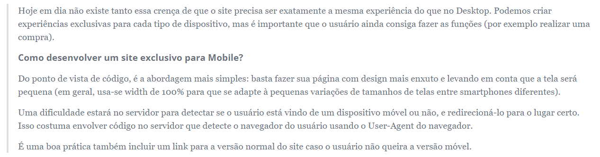
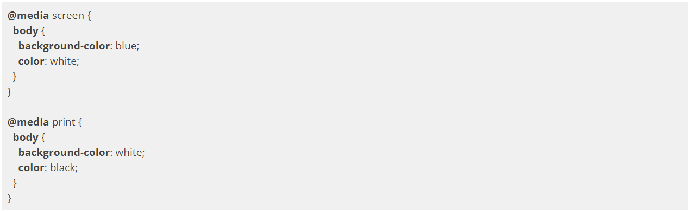

Como atender a esses usuários?
Para que suportemos usuários móveis, antes de tudo, precisamos tomar uma decisão: fazer um site exclusivo - e diferente - focado em dispositivos móveis ou adaptar nosso site para funcionar em qualquer dispositivo?
Vários sites na internet adotam a estratégia de ter um site diferente voltado para dispositivos móveis usando um subdomínio diferente como "m." ou "mobile.", como https://m.kabum.com.br.
Essa abordagem é a que traz maior facilidade na hora de pensar nas capacidades de cada plataforma, Desktop e mobile, permitindo que entreguemos uma experiência customizada e otimizada para cada situação. Porém, há diversos problemas envolvidos:
Como atender adequadamente diversos dispositivos tão diferentes quanto um smartphone com tela pequena e um tablet com tela mediana? E se ainda considerarmos as SmartTVs, ChromeCast, AppleTV? Teríamos que montar um site específico para cada tipo de plataforma?
Uma abordagem que costumas ser muito utilizada é a de ter um único site, acessível em todos os dispositivos móveis. Adeptos da ideia da Web única (One Web) consideram que o melhor para o usuário é ter o mesmo site do Desktop normal também acessível no mundo móvel. É o melhor para o desenvolvedor também, que não precisará manter vários sites diferentes. E é o que garante a compatibilidade com a maior gama de aparelhos diferentes.

CSS media types
Desde a época do CSS2, há uma preocupação com o suporte de regras de layout diferentes para cada situação possível. Isso é feito usando os chamados media types, que podem ser declarados ao se invocar um arquivo CSS:
Outra forma de declarar os media types é separar as regras dentro do próprio arquivo CSS:

O media type screen determina a visualização normal, na tela do Desktop. É muito comum também termos um CSS com media type print com regras de impressão (por exemplo, retirar navegação, formatar cores para serem mais adequadas para leitura em papel etc).
CSS3 media queries
Todos os smartphones e navegadores modernos suportam uma nova forma de adaptar o CSS baseado nas propriedades dos dispositivos, as media queries do CSS3.
Em vez de simplesmente falar que determinado CSS é para handheld em geral, nós podemos agora indicar que determinadas regras do CSS devem ser vinculadas a propriedades do dispositivo como tamanho da tela, orientação (landscape ou portrait) e até resolução em dpi.